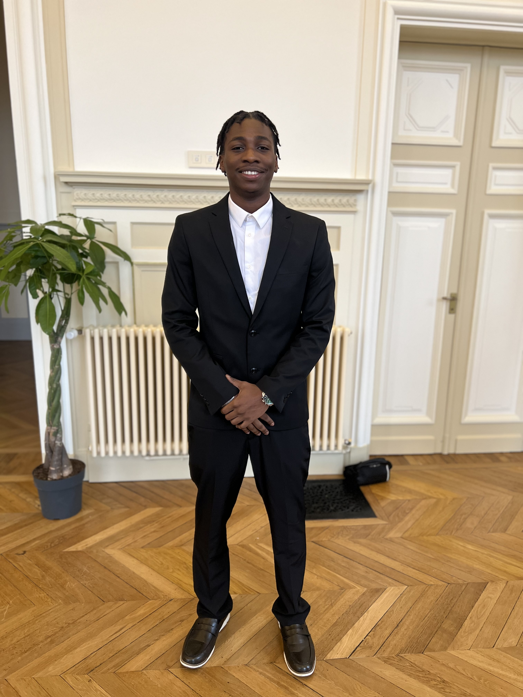

[ Développeur Full-Stack ]
Passionné par le développement d'applications web performantes, le Green Coding et les architectures logicielles modernes.

Je m'appelle Mamadou Drago, étudiant en BTS SIO option SLAM au lycée Gustave Flaubert de Rouen. Mon parcours est guidé par une curiosité constante pour le développement d'outils numériques utiles et bien conçus.
Du site vitrine au KDS (Kitchen Display System), j'aime relever des défis techniques, travailler en équipe et livrer des solutions fonctionnelles qui respectent les bonnes pratiques.
Système d'affichage cuisine en TypeScript sous Linux (WSL2). Configuration de l'environnement, intégration BDD, tests.
Application web complexe (médecins, admins). Développement de fonctionnalités métier spécifiques, travail en équipe.
Développeur Full-Stack
Développeur Web
Étudiant en recherche d'alternance ou de projets freelance. Disponible immédiatement pour discuter de vos besoins techniques.